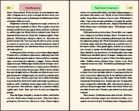
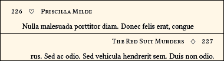

Documentation for novel document class
Documentation version: 1.38.
User Guide
6. Headers, Footers
9. Display, Start Pages;
Chapters; Continued Pages;
Footnotes, Endnotes.
6. Headers and Footers
Overview: The novel class has a default header style. If you like it, then you do not have to use any of the configuration commands. So, before studying these commands, do a test document that uses the defaults.
You may choose among several pre-configured header/footer styles. Then, you may change the appearance, content, and position. If none of it works for you, then you may define your own headers/footers using fancyhdr syntax. However, just about every style used in fictional works can be obtained using the pre-configured styles and adjustments.
Individual pages, such as title, copyright, and new chapters, can have the header/footer style changed locally, on a per-page basis.
6.1 Global Header/Footer Settings, only in Preamble.
These commands determine whether your book will have headers and/or footers, and set the default style that is used for nearly all pages of the text. Per-page exceptions, such as for blank pages, title, copyright, and new chapters, are performed using the local settings commands.
6.1.1 \SetHeadJump{number}, \SetFootJump{number}
These two commands control the separation between the header/footer and the main text. Since they pertain to page layout, rather than style, their usage is described on Page 4.
6.1.2 \SetHeadFootStyle{number}
Command \SetHeadFootStyle{number} chooses among several pre-configured header/footer styles, numbered 1 through 6. The default is style 1. The internals of the configuration can then be changed using a variety of commands.
Some styles support an optional "emblem", which applies a decoration near the page number.
Style 0 means neither header nor footer. Not practical for fiction, but it exists.

\SetHeadFootStyle{1}
Only Header.
Page number at outside (left verso, right recto).
Optional emblem adjacent to page number.
Text centered. Default author verso, title recto.
This is the default for the novel document class.

\SetHeadFootStyle{2}
Only Footer.
Page number at outside (left verso, right recto).
Optional emblem adjacent to page number.

\SetHeadFootStyle{3}
Only Footer.
Page number centered.
Disregards emblem, if coded.
\SetHeadFootStyle{4}
Only Header.
Page number at outside (left verso, right recto).
Optional emblem adjacent to page number.
Text towards outside, instead of centered.
Text begins or ends 1em from the emblem.
Default author verso, title recto.
\SetHeadFootStyle{5}
Header and Footer.
Page number centered in footer.
Disregards emblem, if coded.
Text centered in header.
Default author verso, title recto.
\SetHeadFootStyle{6}
Only Header.
Page number at outside (left verso, right recto).
Optional emblem adjacent to page number.
Text towards inside, instead of centered.
Default author verso, title recto.
Custom Style
Before you think about writing custom header/footer styles, be sure to try the pre-configured choices. I have looked through a lot of fiction of all kinds. The pre-configured choices include every style I have seen, with the exception of the most highly decorative.
If none of the above are satisfactory, then you can write your own headers and footers using the syntax of the fancyhdr package.
• In the Preamble, use one of the above \SetHeadFootStyle{integer} to pick a starting point, in terms of whether or not there is a header and/or footer. This is required, so that the layout engine knows how to calculate space. After that, write the fancyhdr code for your custom header/footer in the Preamble. It will over-ride the numerical style in terms of appearance, but occupy the same space.
• You cannot use a header or footer with more than one line. No exceptions.
• See the file novel-HeadFootStyles.sty for how it is done in the pre-configured styles. In the file, the relevant portion follows Look here for the pre-defined styles, for use as models.
• Particularly note that your own style will not automatically use the headfont, or loose tracking, unless you include the necessary code in your own definition. Do not use the \textls command.
• No cheating! If you choose a numerical style that does not have a header, then do not attempt to write a custom style that includes a header. Same with footer. Also, if you you choose a numerical style with both header and footer, then you cannot only customize one of them; you must customize both.
6.1.3 \SetEmblems{verso}{recto}
If the style supports it, you may place an "emblem" that appears at a fixed distance (2.5em} from the outer margin. Thus, it will appear to the right of the page number on verso pages, and to the left of the page number on recto pages. In the case of style 4, there will be a clearance of 1em between the emblem and the header text.
The font used for emblems will be the same as the headfont, unless you code the emblem to use a different font (perhaps one you specified with the \NewFontFace command), or unless you use one of the built-in \decoglyph codes.
An emblem is a minor decoration that should not distract the eye from the main text.
 • Most books do not use emblems. When they do, it is typically a vertical bar, or a bullet, like this:
• Most books do not use emblems. When they do, it is typically a vertical bar, or a bullet, like this:
\SetHeadFootStyle{4}
\SetEmblems{|}{|}
The verso and recto emblems may be different. Whether they are the same or not, you must set them both, if you use emblems. Blanks are allowed.
• Emblems may be styled. For example:
The header emblems shown at right were produced using the code below. Dingbats from the NovelDeco font were specified, adjusted for size and position.
\SetEmblems{\charscale{1.1}{\raisebox{-0.05em}{\decoglyph{l9825}}}}%
{\charscale{1.1}{\raisebox{-0.05em}{\decoglyph{l9826}}}}
• You may also use images, or combined images and text. If you use images, they must be at the exact resolution required by your print service (usually 300dpi for gray, 600dpi for b/w), and at exact size without scaling. The \InlineImage command must be used. See novel's image documentation details. You may find that a vertical offset of \nfs (normal font size) is useful, as this will place the top of the emblem image at the top margin.

\SetHeadFootStyle{4}
\SetEmblems{\InlineImage[0pt,b]{spy.png}}%
{\InlineImage[0pt,b]{spy.png}}
• At the small size of an emblem, it is difficult to use detailed artwork. A black/white image at 600dpi will print similarly to a font dingbat. Grayscale at 300dpi will probably not be satisfactory unless the emblem is a single shade of gray. For the above example, a character from the "Fontawesome" font was converted to a png image at mid-gray. It is less distracting than a black character from the font, but hard to discern. Note that there is no "gray ink" for directly writing text in gray.
• Ask your print service whether the presence of a small image in each page header will affect production costs. Probably not, but if there is a different per-page charge when pages have an image... Oops!
• The layout calculation does not care whether emblems intrude into the margins. You will have to inspect your PDF to determine whether a header emblem is too tall, or a footer emblem too deep, for the allowed top and bottm margin clearance. Class option shademargins (in draft mode only) is helpful.
6.1.4 \SetPageNumberStyle{code using \thepage}
By default, the page number is simply \thepage. In most cases, leave it that way. But if you wish to change how the page number is displayed, you can use this command to style how \thepage is displayed. Examples:
\SetPageNumberStyle{\emph{thepage}} % Page number in italics.
\SetPageNumberStyle{-- \thepage --} % En-dash on each side of number, for headstyle 3 or 5.
The headfont is applied automatically, unless you over-ride it in your code.
You could also get more involved, using a different font or size. Avoid over-doing it. If you are tempted to use a macro that counts page numbers backwards, be aware that your print service will likely reject it. Anyway, it has already been done in fiction.
6.1.5 \SetHeadFont[features]{font}
This setting is described on Page 5, among other fonts.
6.1.6 \SetLooseHead{number}
This command applies to both headers and footers.
If you are using a style that has header text, then for best appearance the characters should appear with a little extra space between them, so that they are more easily distinguished from the main text. This is especially true if you are using small caps. The name for such adjustment is "tracking."
Note: Do not use the \textls command. It is disabled in this class.

The argument of \SetLooseHead is a number from 0 to 1000. At 0 there is no extra space between the letters. Values from 50 (default) to 200 are most useful. Higher values are unusual.
Page number tracking will be clamped at a maximum of 50, even when a larger (looser) tracking is applied to text.
The looseness applies to inter-letter spacing, but not to inter-word spacing. To increase inter-word spacing, use extra code such as \, (which is a LaTeX thin space) as needed.
6.1.7 \SetChapterDisplay{choice}
This command is only applied if you begin new chapters with the ChapterDisplay environment. You may pick one of the thispagestyle choices, described in the next section. For example:
\SetChapterDisplay{dropfolioinside}
Then, that choice will be applied to each page using ChapterDisplay, without you having to write \thispagestyle each time.
The default is footer. This allows a ChapterDisplay page to show its footer (only if it has one), but not header.
If you use this command, you may still over-ride it on a particular page, by using \thispagestyle{choice} before \begin{ChapterDisplay}.
6.2 Local Header/Footer Settings, in Document Body
These commands are used when a page header/footer style is an exception to the general rule. Examples are blank pages, titles, copyright, and new chapters. You can also dynamically change the header text.
6.2.1 \SetVersoHeadText{text}\SetRectoHeadText{text}
If you are using style 1, 4, 5, or 6, the header text can be dynamically changed from page to page. This feature is useful if your wish to include chapter titles in the header. It is also useful if your work is a collection of stories with different titles, perhaps by different authors. But before you use this feature, speak with your print service! Many print-on-demand services will insist that the content of headers must not vary from place to place, because different headers may be confused with portions of different books, during the assembly process.
\SetVersoHeadText{New Verso Head}\SetRectoHeadText{New Recto Head}
These two commands may be used at any time, in the Preamble or document body. When a command is used, it stores its argument in \versoheadtext or \rectoheadtext. In turn, the current value of \versoheadtext or \rectoheadtext is immediately used for the header, and will remain in effect until changed again by \SetVersoHeadText or \SetRectoHeadText.
If you do not use these commands in the Preamble, then at the beginning of the document body they will be automatically set to the author (verso) and the title (recto). However, you may find that the inter-word space is closer than you would like.
For improved inter-word space, use \, (the LaTeX thin space) in addition to ordinary space. You may use as many as you need.
You may use ordinary LaTeX styling commands for the text:
\SetRectoHeadText{The \,\emph{Bad \,Boy} \,Chronicles}
The most popular styling uses lowercase to small caps:
\SetRectoHeadText{\smcp{The \,Danton \,Code}}
• Avoid bold. Avoid underline. Really. Don't do it. No, no, no!
• With novel version 1.32, you are no longer required to use tilde instead of space.
6.2.2 \thispagestyle{choice}
When you choose a style with header, then space is allocated above the text block, where the header will be placed. That space will be allocated whether or not the header is full or empty. The same applies to the footer. This allocation is global, and cannot be changed in your document body. All standard books work this way, not just with TeX.
However, on a per-page basis you can change whether or not a header or footer has visible content. This is routinely done for blank pages, title page, copyright page, and some others. It is also the norm for pages that begin a new chapter.
• The word "folio" has several meanings: It may refer to a particular paper size, or to a folded piece of paper at any size, or simply to a page number. Below, "folio" means page number.
• When you use the \thispagestyle command, your choice is applied only to the one page on which the command is written. It is best to use this command at or towards the top of the affected page. If the page uses the ChapterDisplay environment, and you use \thispagestyle, then you must place \thispagestyle before \begin{ChapterDisplay}.
• The following choices are allowed: fancy, empty, footer, forcenumber, dropfoliobeneath, and dropfolioinside.
For compatibility reasons, plain and fancyplain are also allowed, and have the same effect as footer.
\thispagestyle{fancy}
This applies the default (fancy) page style, so it is not normally needed. Only use this command to over-ride some other \thispagestyle command, or to over-ride the \SetChapterDisplay setting.
\thispagestyle{empty}
Header and footer are both blank.
\thispagestyle{footer}
Ignored if the style has no footer. If it does, then the usual footer appears. Header, if any, is blank.
This command is an alias for fancyplain. It is like the plain style, except that the footer (which is presumed to contain the page number) is fully styled. But unlike plain, the footer style does not cause a page number to appear when no footer exists. If that is what you need, then use either style dropfoliobeneath or dropfolioinside, depending on whether you have extra room in the bottom margin.
\thispagestyle{forcenumber}
If the style has a footer, then it appears as usual, and the header (if any) is blank. If the style has a header but no footer, then the outside portion of the header (which is presumed to contain the page number and emblem) appears, but the text portion of the header is blank.
The forcenumber choice is non-standard. Use it only if you must have a page number, and no other choice is suitable.
\thispagestyle{dropfoliobeneath}
The header (if any) is blank. If there is a footer, then it appears as usual. But if there is no footer, this command creates a one-page fake footer, which contains the centered page number. The fake footer is located where the next line of text would be, if the textblock were one line longer than its actual value.
• For the fake footer to be acceptable in print, the bottom margin must be wider than the minimum amount required by your print service. For example, suppose that the minimum bottom margin is 0.5in, but you set the bottom margin to 0.75in. That gives you 0.25in wiggle room, into which the fake footer will probably fit, because typical baselineskip is 0.2in to 0.25in.
• The document class does not know whether or not you have extra space available in the bottom margin. It is your responsibility to know.
\thispagestyle{dropfolioinside}
The header (if any) is blank. If there is a footer, then it appears as usual. But if there is no footer, this commands temporarily reduces the number of lines per page by one line. At the bottom, where the last line of text would normally be, the page number is centered. Thus, there is no intrusion into the bottom margin.
This command may only be used following the \clearpage command. Thus, it may be used at the start of new chapters, or on pages (such as copyright page) that do not flow from a previous page. If you use it elsewhere, the print will have incorrect layout, but there will be no error or warning, since the compiler is not sure what you are trying to do.
If used on a page with ChapterDisplay environment, you must place \thispagestyle{dropfolioinside} before you begin ChapterDisplay. The display block has a disposable blank line at its top, which is removed when dropfolioinside is used (instead of removing a line from the following text block).